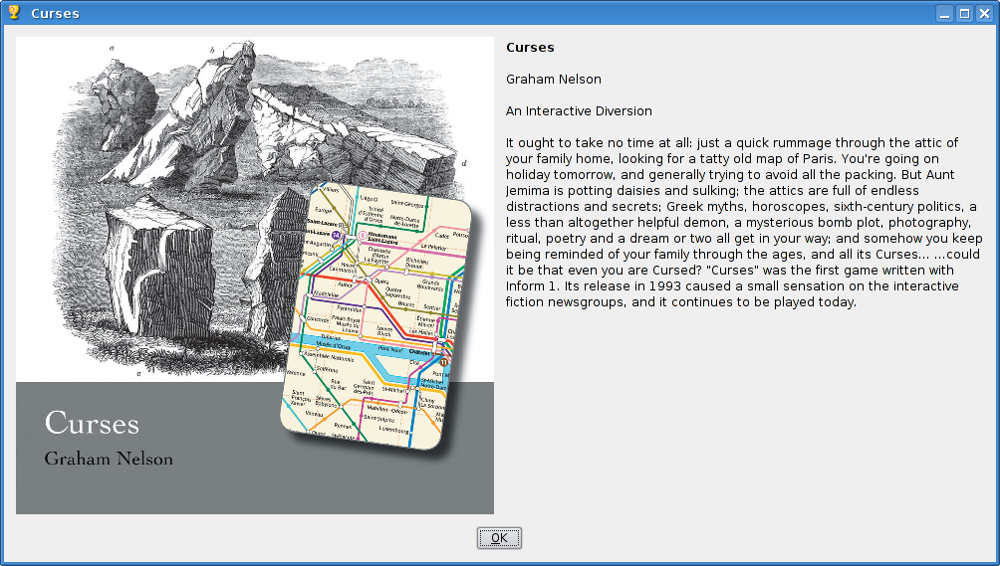
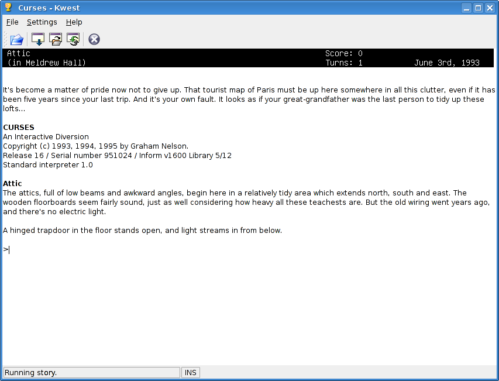

Kwest, a Z-machine interpreter for KDE
Kwest is a port of the popular Unix Frotz interpreter to KDE.
Features of Kwest are:
- Support for reading zblorb files and showing cover art and treaty of
Babel metadata.
- Fairly complete Z-machine interpreter, based on Frotz 2.43, supporting
color, styles and timed input. Not yet supported are sound and V6 pictures.
- Same input-editing facilities as Frotz: command history, tab completion,
standard abreviations.
- Fonts and colours are changeable on the fly through the GUI.
You can download the latest version of Kwest from Sourceforge.
If you're absolutely clueless about Z-machines, Frotz and interactive
fiction, you can check out e.g. the Brass
Lantern or this collection of links at Parsifal.
Some screenshots of Kwest in action:

